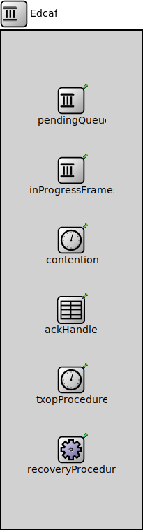

Package: inet.linklayer.ieee80211.mac.channelaccess
Edcaf
compound moduleIEEE 802.11 Enhanced Distributed Channel Access Function
Usage diagram
The following diagram shows usage relationships between types. Unresolved types are missing from the diagram.
Used in compound modules
| Name | Type | Description |
|---|---|---|
| Edca | compound module | (no description) |
Parameters
| Name | Type | Default value | Description |
|---|---|---|---|
| rxModule | string | ||
| collisionControllerModule | string | ||
| originatorMacDataServiceModule | string | ||
| accessCategory | string | ||
| aifsn | int | -1 | |
| cwMin | int | -1 | |
| cwMax | int | -1 |
Properties
| Name | Value | Description |
|---|---|---|
| class | Edcaf | |
| display | i=block/queue |
Signals
| Name | Type | Unit |
|---|---|---|
| packetSentToPeer | inet::Packet | |
| channelOwnershipChanged | bool |
Statistics
| Name | Title | Source | Record | Unit | Interpolation Mode |
|---|---|---|---|---|---|
| packetSentToPeerWithRetry | packets sent: with retry | ieee80211Retry(packetSentToPeer) | count, sum(packetBytes), vector(packetBytes) | none | |
| packetSentToPeerBroadcast | packets sent: broadcast | ieee80211Broadcast(packetSentToPeer) | count, sum(packetBytes), vector(packetBytes) | none | |
| packetSentToPeerWithoutRetry | packets sent: without retry | ieee80211NotRetry(packetSentToPeer) | count, sum(packetBytes), vector(packetBytes) | none | |
| packetSentToPeer | packets sent | count, sum(packetBytes), vector(packetBytes) | none | ||
| packetSentToPeerUnicast | packets sent: unicast | ieee80211Unicast(packetSentToPeer) | count, sum(packetBytes), vector(packetBytes) | none | |
| channelOwnershipChanged | channel ownership | count, vector? | sample-hold | ||
| packetSentToPeerMulticast | packets sent: multicast | ieee80211Multicast(packetSentToPeer) | count, sum(packetBytes), vector(packetBytes) | none |
Unassigned submodule parameters
| Name | Type | Default value | Description |
|---|---|---|---|
| inProgressFrames.pendingQueueModule | string | "^.pendingQueue" | |
| inProgressFrames.originatorMacDataServiceModule | string | "^.^.^.originatorMacDataService" | |
| inProgressFrames.ackHandlerModule | string | "^.ackHandler" | |
| txopProcedure.txopLimit | double | -1s | |
| recoveryProcedure.shortRetryLimit | int | 7 | |
| recoveryProcedure.longRetryLimit | int | 4 |
Source code
// // IEEE 802.11 Enhanced Distributed Channel Access Function // module Edcaf { parameters: string rxModule; string collisionControllerModule; string originatorMacDataServiceModule; string accessCategory @enum("AC_BK","AC_BE","AC_VI","AC_VO"); int aifsn = default(-1); int cwMin = default(-1); int cwMax = default(-1); @class(Edcaf); @display("i=block/queue"); @signal[packetSentToPeer](type=inet::Packet); @signal[channelOwnershipChanged](type=bool); @statistic[packetSentToPeer](title="packets sent"; record=count,sum(packetBytes),vector(packetBytes); interpolationmode=none); @statistic[packetSentToPeerUnicast](title="packets sent: unicast"; source=ieee80211Unicast(packetSentToPeer); record=count,sum(packetBytes),vector(packetBytes); interpolationmode=none); @statistic[packetSentToPeerMulticast](title="packets sent: multicast"; source=ieee80211Multicast(packetSentToPeer); record=count,sum(packetBytes),vector(packetBytes); interpolationmode=none); @statistic[packetSentToPeerBroadcast](title="packets sent: broadcast "; source=ieee80211Broadcast(packetSentToPeer); record=count,sum(packetBytes),vector(packetBytes); interpolationmode=none); @statistic[packetSentToPeerWithRetry](title="packets sent: with retry"; source=ieee80211Retry(packetSentToPeer); record=count,sum(packetBytes),vector(packetBytes); interpolationmode=none); @statistic[packetSentToPeerWithoutRetry](title="packets sent: without retry"; source=ieee80211NotRetry(packetSentToPeer); record=count,sum(packetBytes),vector(packetBytes); interpolationmode=none); @statistic[channelOwnershipChanged](title="channel ownership"; record=count,vector?; interpolationmode=sample-hold); submodules: pendingQueue: <default("PendingQueue")> like IPacketQueue { parameters: @display("p=100,100"); } inProgressFrames: InProgressFrames { parameters: pendingQueueModule = default("^.pendingQueue"); originatorMacDataServiceModule = default("^.^.^.originatorMacDataService"); ackHandlerModule = default("^.ackHandler"); @display("p=100,200"); } contention: <default("Contention")> like IContention { parameters: @display("p=100,300"); } // TODO consider moving QosRecoveryProcedure and QosAckHandler from Edcaf to Hcf, because they seem to be prepared to handle all ACs? ackHandler: QosAckHandler { parameters: @display("p=100,400"); } txopProcedure: TxopProcedure { parameters: @display("p=100,500"); } // TODO consider moving QosRecoveryProcedure and QosAckHandler from Edcaf to Hcf, because they seem to be prepared to handle all ACs? recoveryProcedure: QosRecoveryProcedure { parameters: cwCalculatorModule = "^"; rtsPolicyModule = "^.^.^.rtsPolicy"; @display("p=100,600"); } }File: src/inet/linklayer/ieee80211/mac/channelaccess/Edcaf.ned
 This documentation is released under the Creative Commons license
This documentation is released under the Creative Commons license